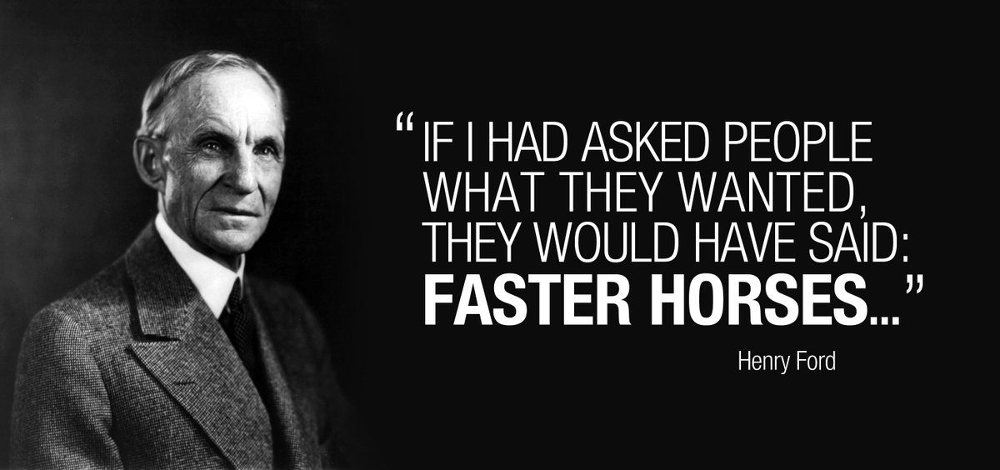

모나드 발명하기
1. 왜?
1.1. 그래서 모나드가 뭔데?
모나드는 자기 함자 범주에서의 모노이드인데, 뭐가 문제야? A monad is a monoid in the category of endofunctors, what's the problem?
http://james-iry.blogspot.com/2009/05/brief-incomplete-and-mostly-wrong.html
1.2. 지금까지 문제 없었는데?

- 과장 조금 (많이) 보태서, 그냥 튜링 머신으로도 문제 없다!
1.3. 구조적 프로그래밍

… 우리의 지력은 정적인 관계를 파악하는데에 적합하지, 시간에 따라 과정이 어떻게 흘러가는지 시각화하는 것에는 다소 약하다. …
- 에츠허르 W. 다익스트라, "Go To문의 해로움에 관하여"
… our intellectual powers are rather geared to master static relations and that our powers to visualize processes evolving in time are relatively poorly developed. …
- Edsger W. Dijkstra in "Go To Statement Considered Harmful"
- 한 단계 위에서 이해하기
- 기계의 조종이라는 개념이 아니라, 논리적인 구조를 기반으로 사고
- 사실 제약은 '기능'
- 프로그래밍 언어는 우리에게서 자유도를 빼앗아가며 발전
- Lisp (1950): 조건문, 일급 시민인 함수 (+재귀), 쓰레기 처리
1.4. 우리(프로그래머)를 편하게 해주는 것들
- 문법 설탕도 우리의 삶을 윤택하게 해주지만, 깊이가 매우 얕음
- 쉽지만 상당수는 작은 이득만을 가져다 줌
- 반면 더 깊은 수준에서 우리를 도와주는 도구들도 있음: 타입 이론, 쓰레기 처리기, 구조적 동시성, …
- 하지만 프로그래머에게 일정 수준 이상의 공부와 규율을 요구함
- 매우 큰 보상을 줌
1.5. 모나드
"계산이란 무엇인가?"
- 사실은 순수한 프로그래밍 언어인 하스켈의 입출력을 위해서 프로그래밍 세계에 실제로 도입됨
- 프로그램 실행의 관점에서 다른 방향의 고수준 생각을 열어줌
2. 발명하기
일단은 실용적인 방향으로…
2.1. 백만불 아끼기
The Billion Dolloar Mistake: https://www.infoq.com/presentations/Null-References-The-Billion-Dollar-Mistake-Tony-Hoare/
2.1.1. 문제 상황
사용자별로 시간표 하나씩 있고, 시간표를 확인하여 수업들을 볼 수 있는 구조:
class User:
def __init__(self, name, timetable_id):
self.name = name
self.timetable_id = timetable_id
class Timetable:
def __init__(self, name, classes):
self.name = name
self.classes = classes
USERS = {
"c9f4ad09-3a57-449e-9303-39fc618ba4a8": User(
"jay",
"bd96da54-5202-4e74-947d-a68c6e50c941"
),
}
TIMETABLES = {
"bd96da54-5202-4e74-947d-a68c6e50c941": Timetable(
"2022 Fall",
["class 1", "class 2"]
),
}
사용자의 ID를 통해 수업들을 확인할 수 있도록 돕는 함수들:
def get_user(user_id):
return USERS[user_id]
def get_timetable(user):
return TIMETABLES[user.timetable_id]
def get_classes(timetable):
return timetable.classes
uid = "c9f4ad09-3a57-449e-9303-39fc618ba4a8"
print(f"{get_classes(get_timetable(get_user(uid))) = }")
만약 없는 사용자의 ID를 넣어준다면?
uid2 = "63a212d5-11e9-4bee-80de-c1d2c12f0478"
try:
print(get_classes(get_timetable(get_user(uid2))))
except:
import traceback
traceback.print_exc()
2.1.2. 해결법
- 예외 사용하기
파이썬을 포함한 현대적인 프로그래밍 언어들에 모두 들어간 예외를 사용해 처리 가능!
try:
classes = get_classes(get_timetable(get_user(uid2)))
except:
classes = None
print(classes)
- 타입 수준에서 해결:
Optional사용하기 (T | None = Optional[T])- 안전한 함수들을 만들자
def get_user_safe(user_id: str) -> User | None:
return USERS.get(user_id)
def get_timetable_safe(user: User) -> list[str] | None:
return TIMETABLES.get(user.timetable_id)
try:
# 바로 이렇게는 사용하지 못하지만...
print(get_classes(get_timetable_safe(get_user_safe(uid2))))
except:
import traceback
traceback.print_exc()
복잡하긴 하지만 이렇게 사용 가능:
def safe_call(user_id):
user = get_user_safe(user_id)
if user is None:
return None
timetable = get_timetable_safe(user)
if timetable is None:
return None
return get_classes(timetable)
print(f"{safe_call(uid) = }")
print(f"{safe_call(uid2) = }")
2.1.3. 편하게 쓸 수 있게 감싸 보자
from typing import TypeVar, Callable, Generic
T = TypeVar("T")
U = TypeVar("U")
class Packet(Generic[T]):
def __init__(self, payload: T | None):
self.payload = payload
def if_exists(self, f: Callable[[T], U | None]) -> "Packet[U]":
if self.payload is None:
return self
return Packet(f(self.payload))
def get_classes_from_user(user_id):
return Packet(get_user_safe(user_id)) \
.if_exists(get_timetable_safe) \
.if_exists(get_classes)
print(get_classes_from_user(uid).payload)
print(get_classes_from_user(uid2).payload)
2.1.4. get_classes_from_user(...) -> Packet[...]?!
Packet 을 돌려주는 다른 함수와는 if_exists 로 감싸면 계속 Packet 으로 감싸지는데…
class ClassCounterService:
def __init__(self):
return
def count_classes(self, classes: list[str]) -> Packet[int]:
return Packet(len(classes))
SHARED_CLASS_COUNTER = ClassCounterService()
def get_class_count(classes: list[str]) -> Packet[int]:
return SHARED_CLASS_COUNTER.count_classes(classes)
class_cnt = get_classes_from_user(uid).if_exists(get_class_count)
print(f"{type(class_cnt) = }")
print(f"{type(class_cnt.payload) = }")
print(f"{type(class_cnt.payload.payload) = }")
print(f"{class_cnt.payload.payload = }")
2.1.5. 까서 합체하자!
class Packet(Generic[T]):
def __init__(self, payload: T | None):
self.payload = payload
def if_exists(self, f: Callable[[T], U | None]) -> "Packet[U]":
if self.payload is None:
return self
return Packet(f(self.payload))
def if_exists_coalesce(self, f: Callable[[T], "Packet[U]"]) -> "Packet[U]":
if self.payload is None:
return self
return f(self.payload)
def get_classes_from_user(user_id):
return Packet(get_user_safe(user_id)) \
.if_exists(get_timetable_safe) \
.if_exists(get_classes)
class ClassCounterService:
def __init__(self):
return
def count_classes(self, classes: list[str]) -> Packet[int]:
return Packet(len(classes))
SHARED_CLASS_COUNTER = ClassCounterService()
def get_class_count(classes: list[str]) -> Packet[int]:
return SHARED_CLASS_COUNTER.count_classes(classes)
class_cnt = get_classes_from_user(uid).if_exists_coalesce(get_class_count)
print(f"{type(class_cnt) = }")
print(f"{type(class_cnt.payload) = }")
print(f"{class_cnt.payload = }")
2.2. 아마도 모나드 (Maybe Monad)
그냥 (Just) 값이 들어있거나 없거나 (Nothing).
위의 Packet 이 아마도 모나드!
__init__으로T를 감쌀 수 있고("return"),if_exists_coalesce로 다른 아마도 모나드 (Packet)를 돌려주는 함수와 이을 수 있다("bind").
2.2.1. 잠깐 길을 벗어나서: 문법 설탕
문법 설탕을 통해서 모나드를 자연스럽게 사용할 수 있다.
대입도 문법 설탕!
a = 1 b = a * 2 c = 3 print(a + b + c)
(lambda a: (lambda b: (lambda c: print(a + b + c) )(3) )(a * 2) )(1)
즉, ~x = y \n ... ~ 은 사실 함수 적용의 문법 설탕
이하는 유사-파이썬 코드입니다.
- 1단계 문법 설탕
중위 연산자 정의가 가능한 언어라면 다음과 같이 "="을 만들어낼 수 있다.
1 >>= (lambda a: a * 2 >>= (lambda b: 3 >>= (lambda c: print(a + b + c) ) ) ) - 2단계 문법 설탕
";"을 갈아끼울 수 있는 언어라면 다음과 같이 "="을 만들어낼 수 있다.
a = 1; b = a * 2; c = 3; print(a + b + c)
- 아마도 모나드의 의미로 "="을 갈아끼우자
"C1; C2"은 "C1"를 한 후 "C2"를 하라는 의미인데, 이 의미를 갈아끼우는 것!
3. 모나드
- 모기(Moggi): \(f: A \to B\) 처럼 생긴 "함수"는 사실 수학적인 함수가 아니라, \(f: A \to M\,B\) 인 수학적인 함수로 표현 가능
- \(A\) 라는 타입의 값과 \(M\ A\) 라는 타입의 "계산"을 분리
- 예시
- 부분 정의: \(M\,A = A_\bot\)
- 비결정성: \(M\,A = \wp(A)\)
- 부작용: \(M\,A = S \to A \times S\)
- 예외: \(M\,A = A + E\)
def babo_factorial(n: int) -> int:
return random(1, n)
# 2^int = {{}, {1, 2}, ..., {1}, {1, ..., n}}
3.1. 게임의 규칙
bind: 'a t -> ('a -> 'b t) -> 'b t와return: 'a -> 'a t의 구현- 언어별로 타입을 조금씩 다르게 표현:
'a tOCaml,t<a>TypeScript/C++/Swift/ReScript/…,t[a]Python,t aHaskell/Elm/…
- 언어별로 타입을 조금씩 다르게 표현:
- 모나드 법칙
bind(return(o), f) == f(o)- Python 등 OOP 언어에서는
return(o).bind(f)와 같이 읽으면 된다
- Python 등 OOP 언어에서는
bind(m, return) == m- 마찬가지로
m.bind(return)
- 마찬가지로
bind(bind(m, f), g) = bind(m, lambda a: bind(f(a), g))m.bind(f).bind(g) = m.bind(lambda a: f(a).bind(g))- 이게 무슨 의미인지는 아래 비결정성에서 확인
3.2. 아마도 (Maybe)
파이썬은 타입이 명시적으로 드러나지 않으므로 정적 타입 언어로 다시 정리하자면:
(* type 'a option = None | Some of 'a (* Built-in *) *) let return (x : 'a) : 'a option = Some x let bind (o : 'a option) (f : 'a -> 'b option) : 'b option = match o with | None -> None | Some x -> f x
3.3. 리스트
(* type 'a list = [] | (::) of 'a * 'a list (* Built-in *) *) let return (x : 'a) : 'a list = [ x ] let bind (o : 'a list) (f : 'a -> 'b list) : 'b list = List.concat_map f o
class ListMonad(Generic[T]):
def __init__(self, lst: list[T]):
self.lst = lst
# ListMonad([x])
def bind(self, f: Callable[[T], list[U]]) -> list[U]:
return ListMonad([y for x in self.lst for y in f(x).lst]) # ?!
nums = ListMonad([1, 2, 3])
print(nums.bind(lambda x: ListMonad([x, x * 2, x * 3]) if x % 2 == 0 else ListMonad([])).lst)
print(f"{[a for x in [1, 2, 3] if x % 2 == 0 for a in [x, x * 2, x * 3]] = }")
한 겹의 괄호에 리스트를 주는 for-식이 들어가는 것은 사실상 모나드를 사용한 코드이다!
하지만 리스트 표현식의 한계는 다음 OCaml 코드의 가독성에서 확인할 수 있다:
let ( let* ) = bind
let result =
List.concat_map (fun x ->
if x mod ....
) [1; 2; 3]
(* let* x = [1; 2; 3] in
* if x mod 2 = 0 then
* [x; x * 2; x * 3]
* else
* [] *)
3.4. 비결정성
비결정적인 프로그램의 "의미(semantics)"를 리스트로 표현 가능
# Inspired by https://stackoverflow.com/a/20644753
import enum
class CoinType(enum.Enum):
FAIR = enum.auto()
BIASED = enum.auto()
class Coin(enum.Enum):
HEAD = enum.auto()
TAIL = enum.auto()
def toss(coin: CoinType) -> Coin:
match coin:
case CoinType.FAIR:
return ListMonad(list(Coin)) # [HEAD, TAIL]
case CoinType.BIASED:
return ListMonad([Coin.HEAD, Coin.HEAD])
def pick():
return ListMonad(list(CoinType)) # [FAIR, BIASED]
# print(pick().bind(lambda coin: toss(coin)).bind(lambda result: ListMonad([result] if result == Coin.HEAD else [])).lst)
print(pick().bind(lambda coin:
toss(coin).bind(lambda result:
# `coin` is now in scope here!
# See the monad law 3 in action
ListMonad([coin] if result == Coin.HEAD else []))
).lst
)
bind(bind(m, f), g) = bind(m, lambda a: bind(f(a), g))m.bind(f).bind(g) = m.bind(lambda a: f(a).bind(g))- 이게 무슨 의미인지는 아래 비결정성에서 확인
이거 그냥 map으로는 안되나? -> [] 때문에 안 됨
4. 마음가짐
- 명령형 프로그래밍에서의 함수 \(f: A \to B\) 는 수학적으로는 적절한 모나드 $M$에 대한 \(f: A \to M\,B\) 으로 항상 나타낼 수 있다.
- 리스트 연산을 할 때, 중첩된 map과 flatmap, filter를 난발하기 전에 한 발짝 물러서서 내가 지금 무엇을 하고 있는지 타입 수준에서 생각해보자.
- [1, 2, 3] -> [[1], [], [3, 6]] -> [1, 3, 6]
- [1, 2, 3] => 1 -> [1], 2 -> [], 3 -> [3, 6]
- M A, "A"
- None이 될 수 있는 타입(옵션, 옵셔널, 널러블, …)에 대한 연산, 리스트의 연산, 프로미스의 연산, 예외를 뱉는 연산은 모두 동일한 방식의 변환을 사용한다.
- Python의 리스트 표현식, Swift의 flatMap과 Optional에 관한
??,?.,if let등의 문법 설탕 등등 특정 모나드에 대한 조준 사격이 사실은 일반화 가능하다. - 모나드는 "세미콜론"의 일반화이다.
- 모나드는 자기 함자 범주에서의 모노이드인데, 뭐가 문제야?